Sixteen days. Four chapters. One country that invented the art of living. From the rooftops of Paris to the peaks of the 3 Vallées, and finally — the sun on our faces along the Côte d'Azur.
From the rooftops of Paris, down through Lyon, up into the Tarentaise valley, back down through the Alps, across to Marseille — and finally south, to the Mediterranean sun. Voici le plan.
Four chapters, woven together like a proper French meal — each course better than the last.
Land in the city of light. A long lunch. Maybe a stroll along the Seine. Early to bed — the mountains await.
Morning train south. Two hours and you're in the food capital of France. Vieux Lyon, a bouchon for dinner, and a glass of Beaujolais.
A final hop up into the Tarentaise Valley. By evening: the chalet, the fireplace, and snow on the roof.
Six nights at Chalet Les Trois Coeurs. Six days of the world's largest ski area. 600 km of pistes. Tartiflette every night.
A leisurely drive back through the Alps. One last night in Lyon — because once is never enough. Then the TGV south to the sun.
Five days on the Mediterranean. Cycling to Cannes. A climb up to Èze. Socca at sunrise. Pastis at sunset.
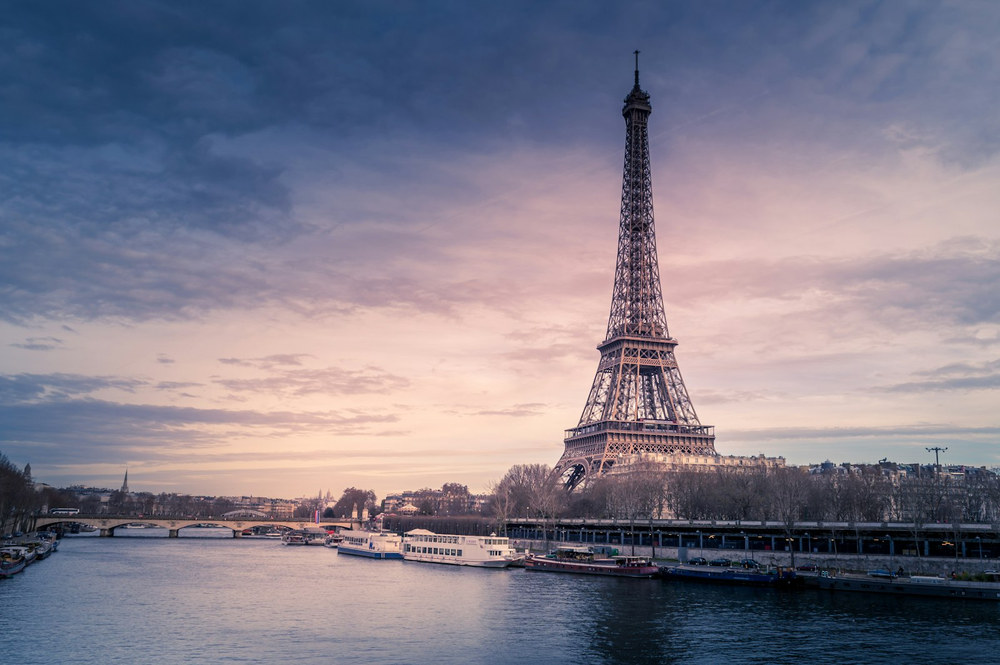
Paris · la ville lumière
We'll only have a day — une journée — but Paris in January is a quieter, gentler thing. No summer queues. The chestnut trees bare, the light low and golden, the bistros warm and smoky.
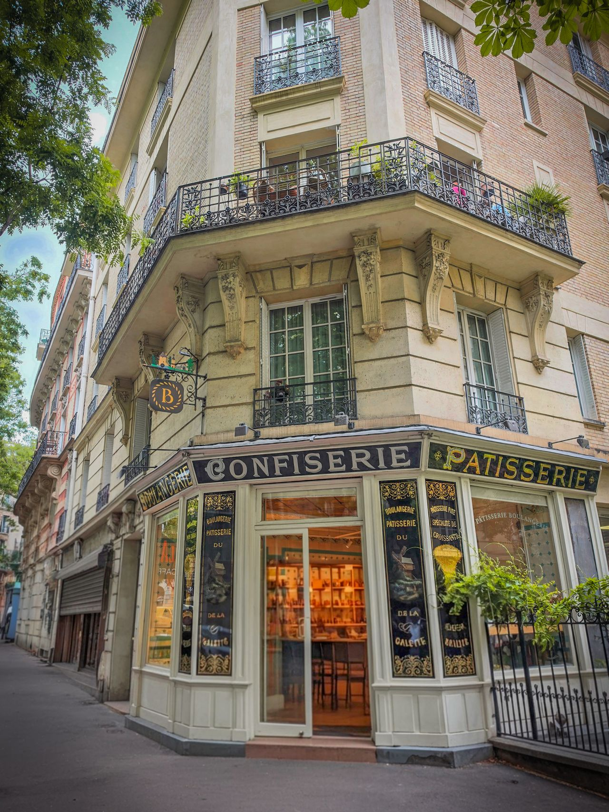
Every Parisian block has one. The hanging B, the painted boulangerie · pâtisserie · confiserie across the windows, the warm light spilling onto the cobblestones at seven in the morning. Une baguette tradition, still warm. A croissant au beurre. A small café crème at the zinc. Et voilà — the day is off to a good start.
The French will tell you, with absolute certainty, that Lyon est la capitale de la gastronomie française. And they are right. This is the city of bouchons, of quenelles, of the chef who invented modern French cooking — Paul Bocuse.
One night here on the way south. One night here on the way back. That's the deal I've made with myself.
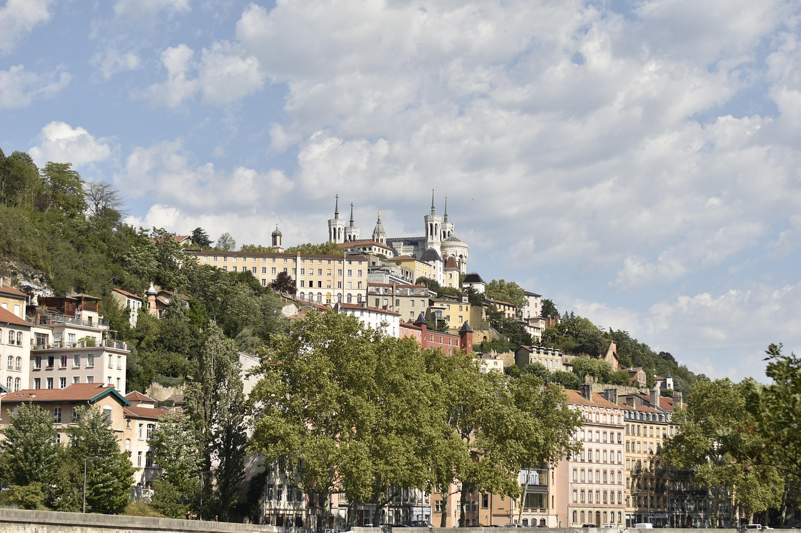
Lyon · Fourvière qui veille sur la ville
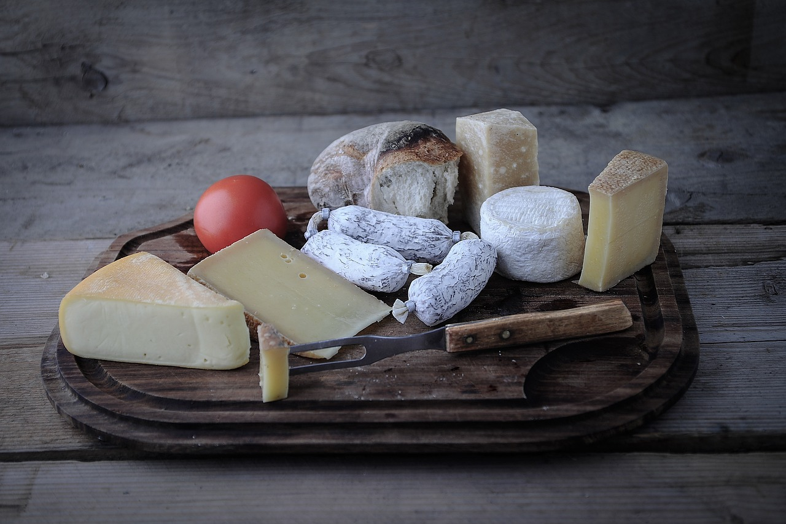
A bouchon is a Lyonnais institution: small, noisy, draped in checked cloth, and built around a single great tablée. Order the saucisson brioché warm, the quenelles swimming in their crayfish sauce, and a half-bottle of beaujolais — red, slightly chilled, almost easy to drink.
"France is the only place where you can sit at a table with a glass of wine, a piece of bread, some butter and cheese, and feel like you are having the meal of a lifetime." — A truth universally acknowledged
The Tarentaise valley · 3 Vallées
Now we arrive at the centrepiece. The 3 Vallées — Méribel, Courchevel, Val Thorens, Les Menuires — is the largest linked ski area on Earth. 600 kilometres of pistes. 180 lifts. One ski pass.
From the chalet in Les Allues we will ski into Méribel centre, take the Saulire cable car up to 2,700 m and — quite literally — point our skis downhill in any direction we choose.
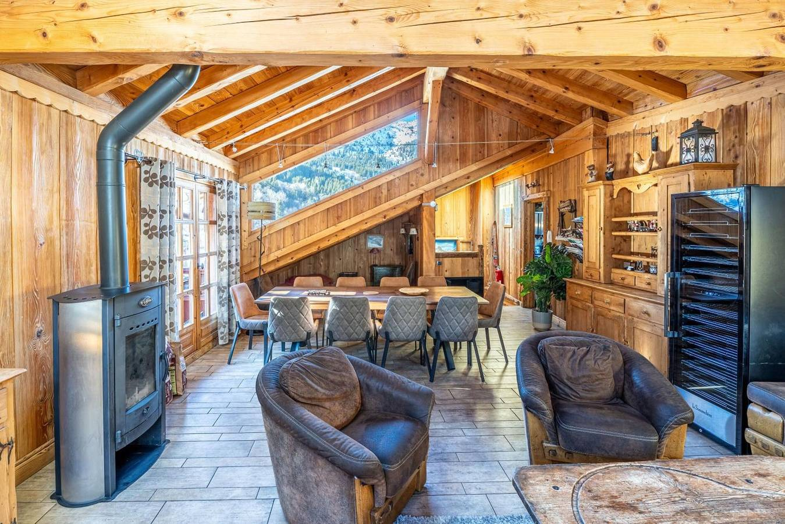
Les Allues · Méribel · Massif de la Vanoise
A 250 m² renovated Savoyard farmhouse at the entrance to the Vanoise National Park. All wood and stone. Five bedrooms with private bathrooms. A south-east facing terrace overlooking the mountains, with a heated table — une table chauffante — for lunch in the cold.
"Sejour très agréable en famille, très beau chalet, bien équipé
et très fonctionnel, tout est parfaitement pensé."
— Jean-Marc, février 2024 ★ 9.4
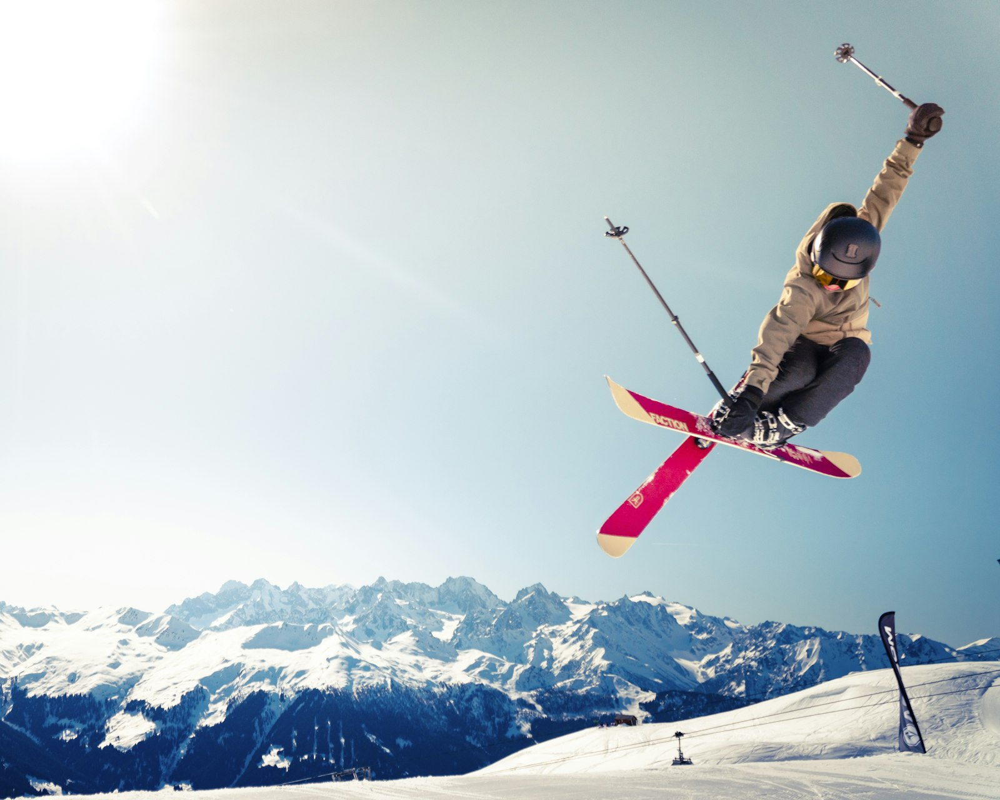
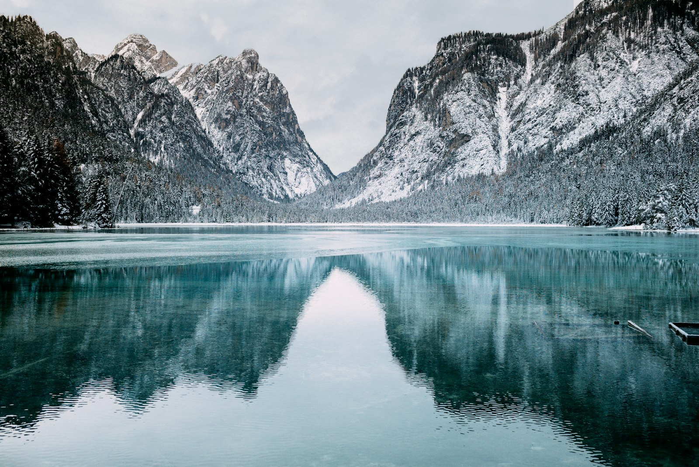
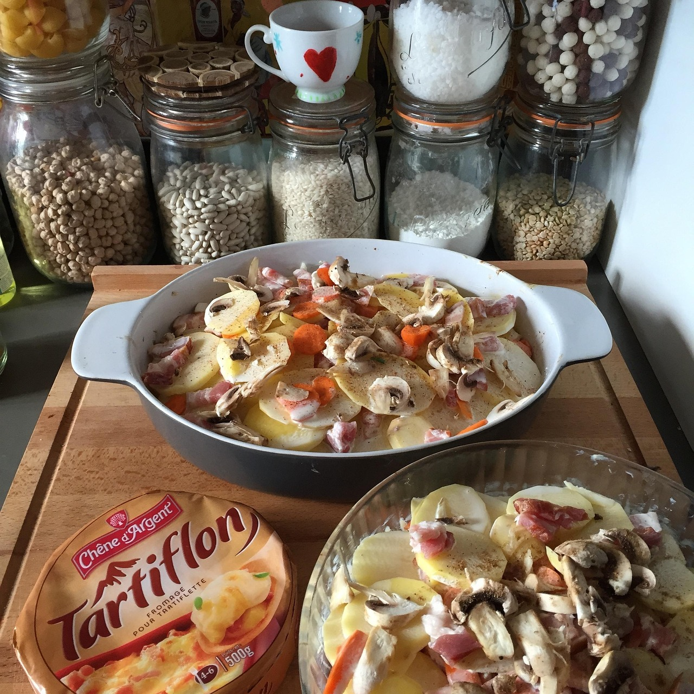
After a day on the slopes, nothing is more welcome than a bubbling tartiflette — potatoes, lardons, onions, half a wheel of reblochon melted on top. The other answers are raclette, fondue savoyarde, and a small glass of génépi — the Alpine digestif that tastes of the mountains themselves.
But surely January isn't cycling weather? Mais non — this is precisely when you do it.
Then — the sun. After nine days in the snow, we descend to the Mediterranean. Five days of lumière, of pastis on a café terrace, of cycling along the coast with the wind in our faces.
Nice in January is mild — ten, twelve degrees — and the locals are warm. It's the slow season, the off-season: the right season.
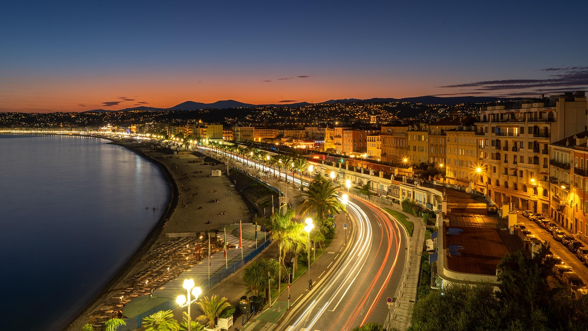
Nice · la Promenade des Anglais, la nuit
Three rides, three different Frances. All on smooth roads, all along the sea.
The classic Riviera ride. Flat, coastal, along the Baie des Anges through Antibes and on to Cannes. Stop for a coffee on La Croisette. Train back — you've earned it.
Up from Nice along the Moyenne Corniche — Napoleon's road — to the perched village of Èze. 400 m of climbing. Pastis at the top, a view you'll remember for a long time.
The gold coast road — la Corniche d'Or — between Cannes and Saint-Raphaël. Red rock plunging into turquoise sea. Inland through the Estérel hills. Harder, more dramatic, sublime.
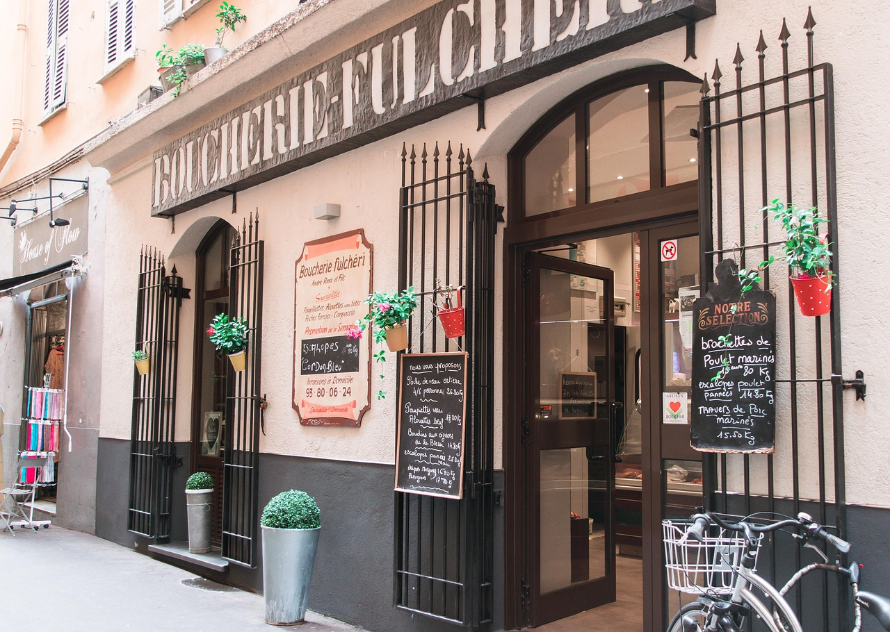
Un bouchon niçois · bienvenue
Niçoise cuisine is the cooking of the sun — olive oil, garlic, tomatoes, herbs from the hills. The opposite, in every way, of the heavy Savoyard fare we will have just left behind. Good.
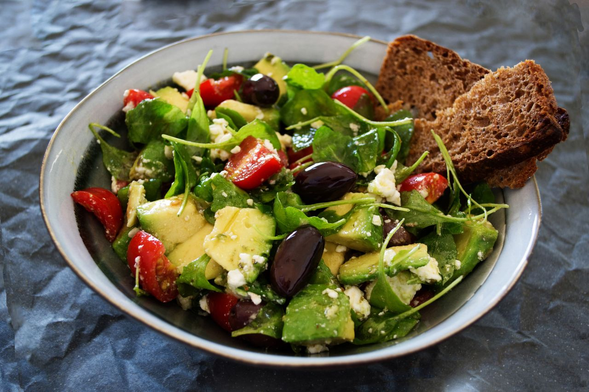
On the Vieux-Port at seven in the morning, when the wood oven is already hot, the socca comes out — a thin, scorching chickpea pancake, eaten standing, with black pepper and a slice of lemon. A glass of cold rosé. A view of the boats. Le Sud, indeed.
Sixteen days. Paris, Lyon, the 3 Vallées, Nice. Snow, sun, cheese, wine,
bikes and mountains. The whole of France in one trip, more or less.
I can't think of a better way to start the year. Qu'en dis-tu ?